20 October 2026 · Fictional data only · Existing graph, ELK automatic layout and SVG architecture.
Implementation and evidence are ready for visual review. 49 engine tests, 11 browser scenarios and 1 built-app smoke test passed. Actual application screenshots and independently rendered PDFs were inspected. Phase 4 stops here; this is not a production-readiness claim.
Exactly 300 unique people appear once across six generations, with 104 partnerships and 394 parentage records. The deterministic network extends the 100-person fixture with interconnected branches, remarriages, half-siblings, adoption and unknown parentage. It contains 36 portrait placements and 264 initial-based cards. Eight licensed stock photographs portray fictional characters; models are deliberately reused in this stress fixture.
Two automatic layouts matched deterministically. Geometry checks found no card overlaps, detached anchors, connectors crossing unrelated cards, unrelated collinear overlaps or ambiguous touching lines. The 408 routed edges have 226 explicitly gapped crossings: these are visual crossings, not family junctions. No per-person coordinates or individual connector corrections were introduced.
All 90,000 ordered person pairs were checked for valid, cycle-free relationship paths and endpoints; representative results were compared with the original relationship implementation. Explicit expected cases cover third cousins once removed, multiple ancestry paths, half-siblings, adoption and unknown parentage. Path validity is exhaustive for this fixture; semantic labels are covered by targeted goldens, not an independent genealogy oracle for every pair.
Layout and crossover preprocessing run in cancellable workers. Changing branches terminates obsolete work; tests observed three cancelled operations, two completed operations, no failures, and no surviving layout workers after completion. The main thread renders SVG and handles navigation. Search, pan, zoom, branch selection and distant relationship highlighting were exercised.
Mobile starts with a readable four-person Emma branch. Users can search for another relative, set ancestor and descendant depth independently, or expand to the complete overview. Personalized branches include immediate partners for context without importing every cousin of included ancestors. The sample posters use two ancestor generations and one descendant generation, resulting in 11 people.
Validation also corrected a resize callback firing after unmount, preserved zoom on viewport resizing, verified ELK's browser worker entry in the production build, and enforced poster aspect ratios for taller branches. Duplicate partnership pairs now fail validation rather than silently collapsing a junction. Existing Phase 2B and Phase 3 browser scenarios pass.
| Sample | Physical size and text | Files and measured export time |
|---|---|---|
| Complete 300-person network | 8233.5 × 639.2 mm First names 12.0 pt; surnames 10.3 pt | PDF · SVG · PNG SVG 306 ms; PDF 813 ms; PNG 760 ms |
| Emma: 18 × 24 inches | 457.2 × 609.6 mm First names 18.1 pt; surnames 15.6 pt | PDF · SVG · PNG SVG 231 ms; PDF 465 ms; PNG 398 ms |
| Emma: 24 × 36 inches | 609.6 × 914.4 mm First names 24.2 pt; surnames 20.7 pt | PDF · SVG · PNG SVG 233 ms; PDF 329 ms; PNG 544 ms |
The complete family requires approximately 8.23 metres × 0.64 metres at readable text sizes. Large-format printing is supported; tiled printing is not implemented. The full PDF uses PDF 1.6 UserUnit=2, which was independently verified with PDFium and pypdf. A print provider must support that physical page size and UserUnit. Printing at “fit to A4” would defeat readability.
Both personalized posters preserve practical page sizes and comfortable margins. PDF export is blocked when calculated names would be below 9 pt. SVGs embed all photographs and specify physical dimensions. PNGs are review rasters capped at 16,384 pixels per side and 24 megapixels; use PDF or SVG as print masters. The full-tree PNG is 16,384 × 1,273 pixels, approximately 50.5 pixels per inch at the intended roll size.
Standalone SVGs were opened with external network requests blocked. Independent PDF checks verify person names, image resources, page dimensions, portrait content and clipping, and comparison against SVG/PNG renders. All three PDF samples passed. Their whole-image mean RGB differences from the standalone SVG renders were below 2 on a 0–255 scale.
| Worker layout / worker round trip | 4197 / 4313 ms |
|---|---|
| Layout result to two animation frames / navigation to ready | 215 / 4894 ms |
| 50 ms heartbeat: longest interval during worker calculation | 64.6 ms |
| Longest normal-navigation main-thread task | 76 ms |
| Pan/zoom frame interval: median / p95 / maximum | 16.7 / 33.3 / 33.4 ms |
| Distant relationship UI action | 126 ms |
| Main JS heap before / after navigation and exports | 10.1 MiB / 30.4 MiB |
| Successful worker JS heap sample | layout preparation: 1.1 MiB; ELK: 20.6 MiB |
| Node layout runs | 5148 ms, RSS 167.6 MiB / 5259 ms, RSS 244.0 MiB |
Measured locally on Intel(R) Core(TM) Ultra 5 125U, Node v18.20.8, Chromium 155.0.8059.80; desktop 1600 × 1200 and mobile emulation 390 × 844. Timings are single instrumented development-browser runs, not service guarantees. The built application also passed its separate worker/search/branch/export smoke test. The build completed successfully.
Memory values are sampled JavaScript heaps or Node RSS, not browser-process peak memory. Some CDP worker samples timed out while ELK was busy; successful samples are reported rather than presenting them as a peak. SVG mounting and export still run on the main thread. Navigation is usable in this test, but observed long tasks and slower frames mean it is not uniformly 60 fps. Physical phones, Safari/Firefox and physical print output were not tested.
These are actual Playwright application captures and independent PDF rasterizations. Click any image to inspect its original resolution. The complete overview and long-distance path necessarily show small cards at fit-to-screen scale; branch views provide readable detail.
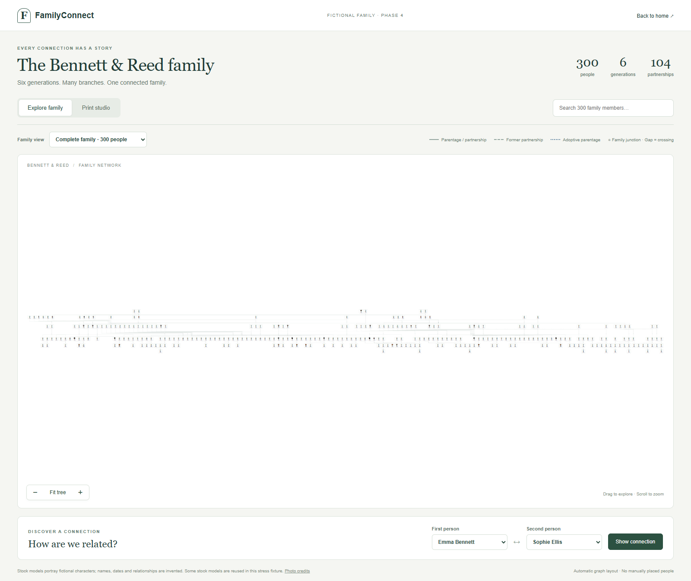
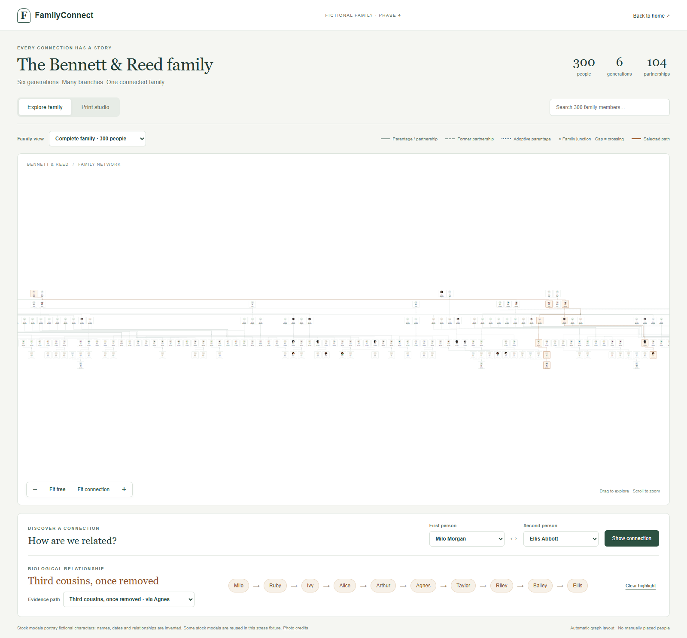
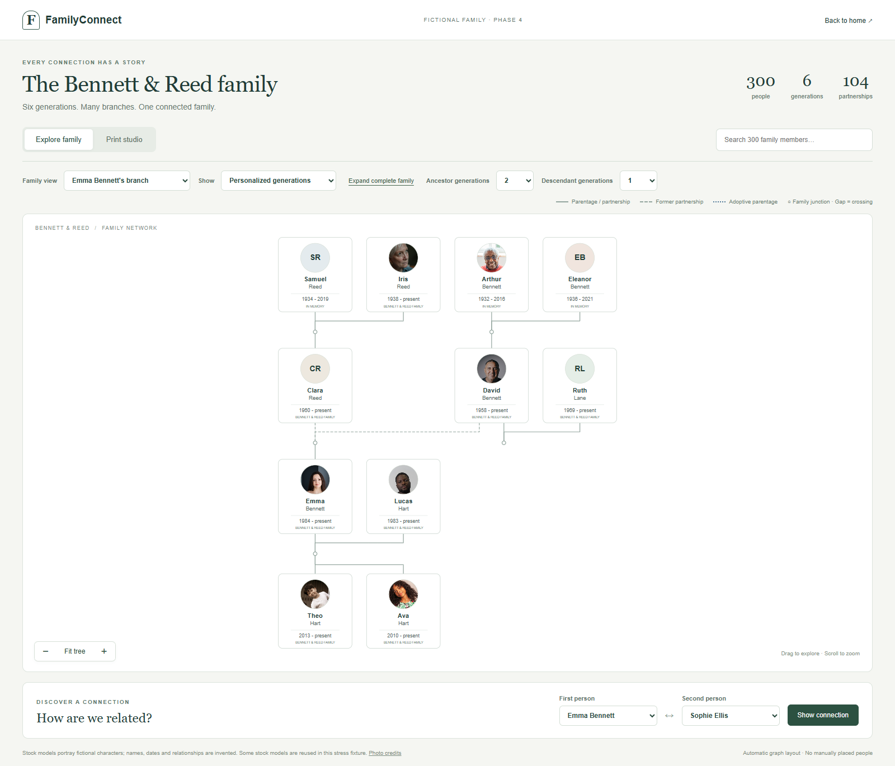
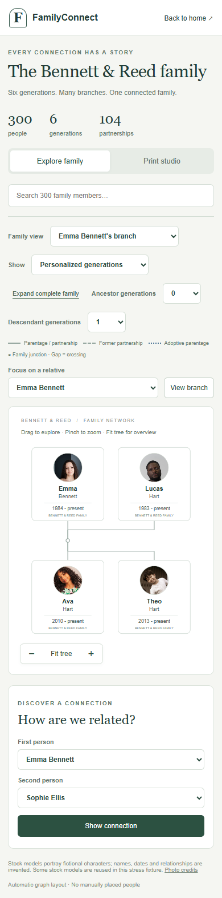
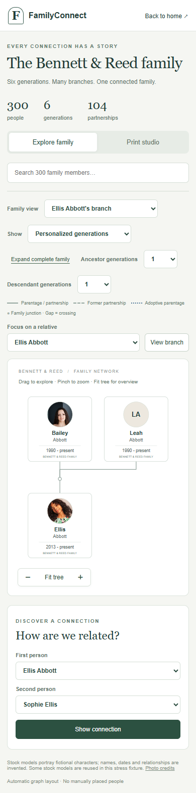
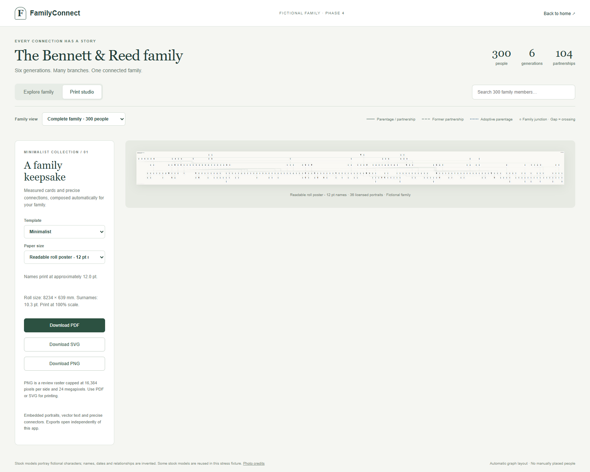
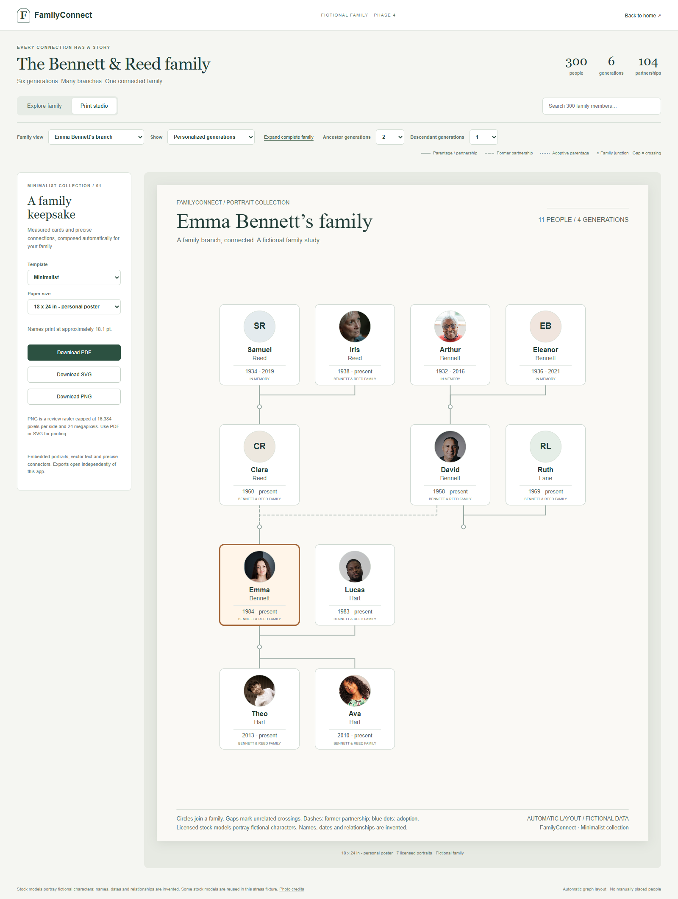
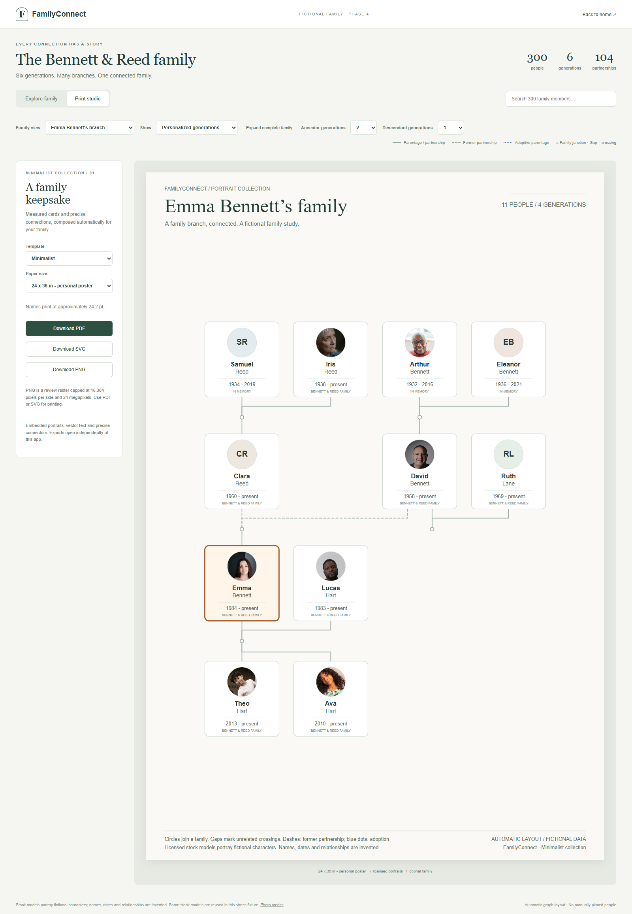
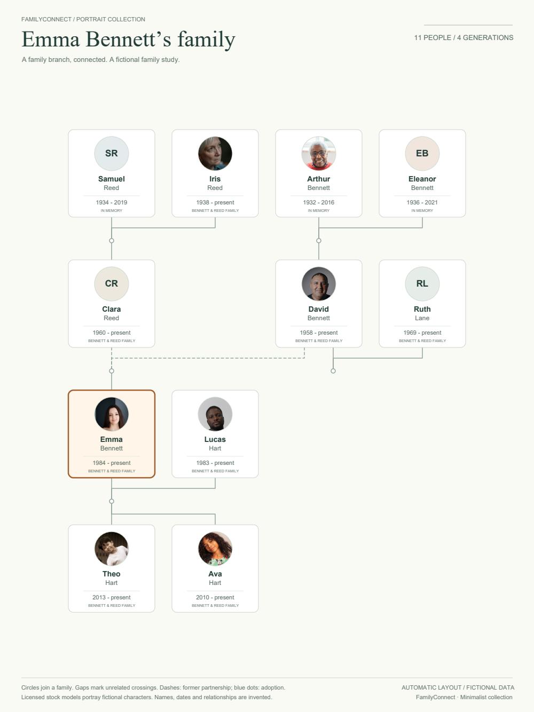
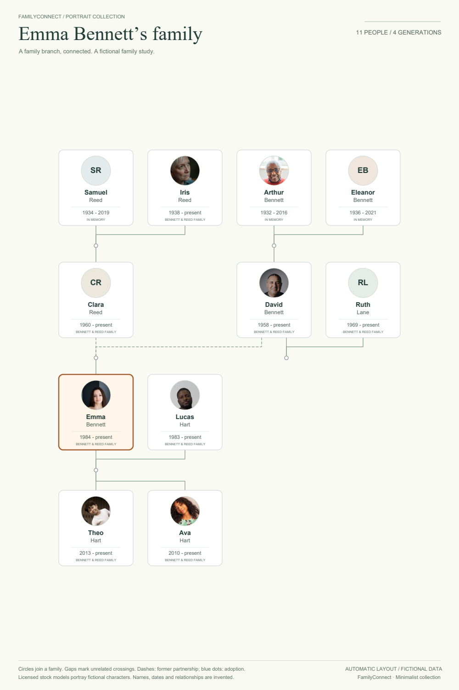
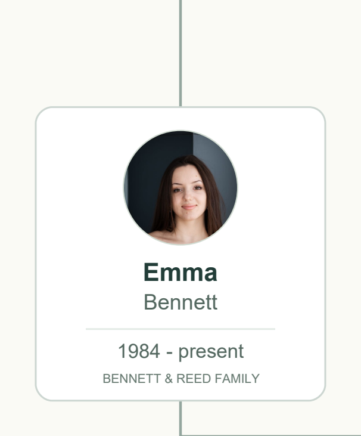
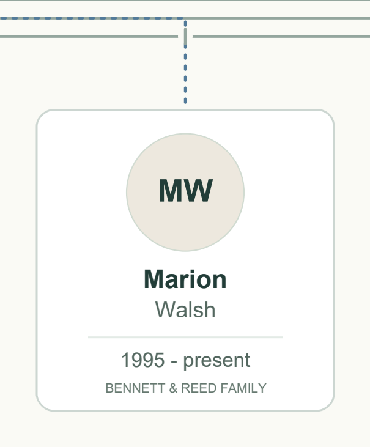
npm run dev:family
Open http://127.0.0.1:5174/?family=300#/tree-prototype. Select a relative under Family view, choose Personalized generations, set ancestor/descendant depth, then open Print studio and select 18 × 24 or 24 × 36 inches. Expand complete family for the full roll export. The default 25-person and ?family=100 routes remain available.
npm run test:family npm run test:family:browser npm run build:family npm run test:family:production python scripts/verify-family-phase4.py python scripts/report-family-phase4.py
unit-results.txt · browser-results.json · production-results.json · layout-metrics.json · relationship-metrics.json · browser-metrics.json · personal-export-metrics.json · cancellation-results.json · export-results.json · fictional-family-300.json
No real family records were used. No payments, decorative templates or subsequent platform phase were implemented.